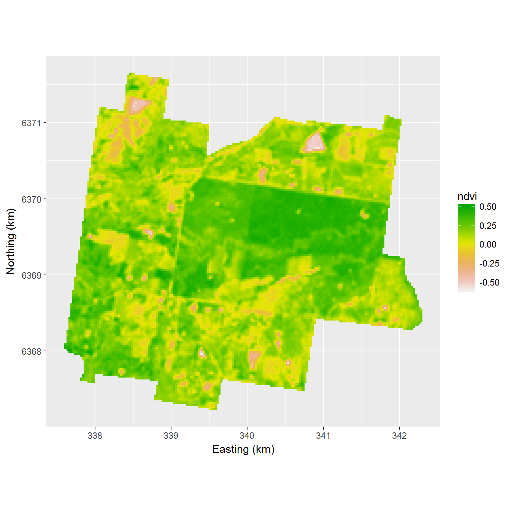
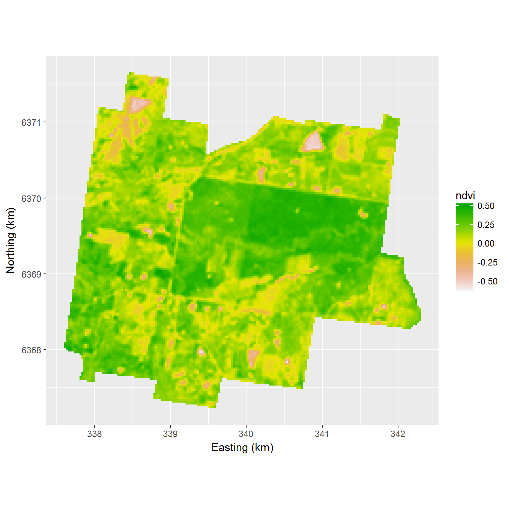
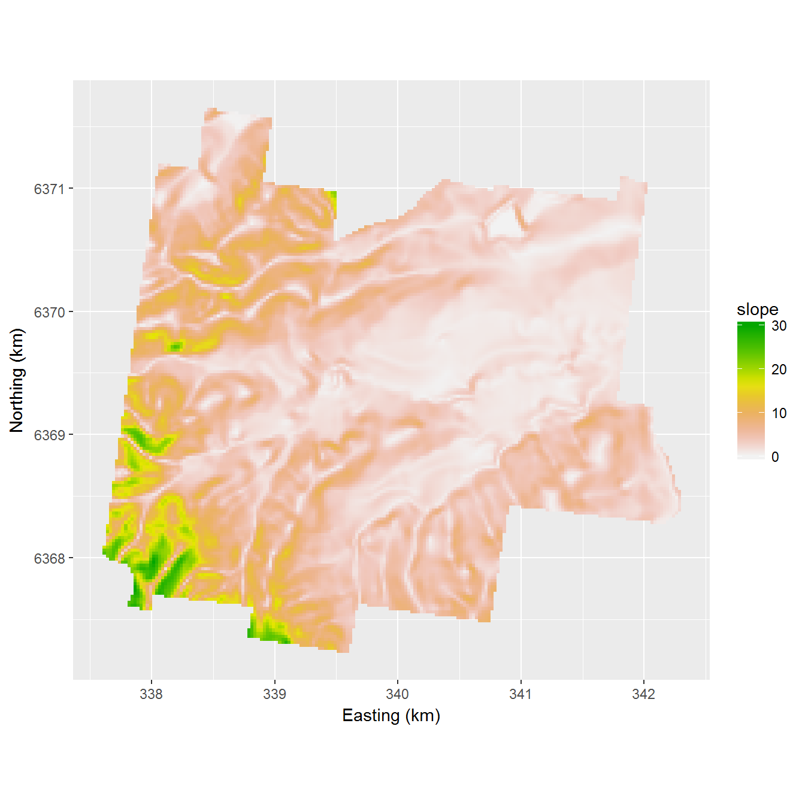
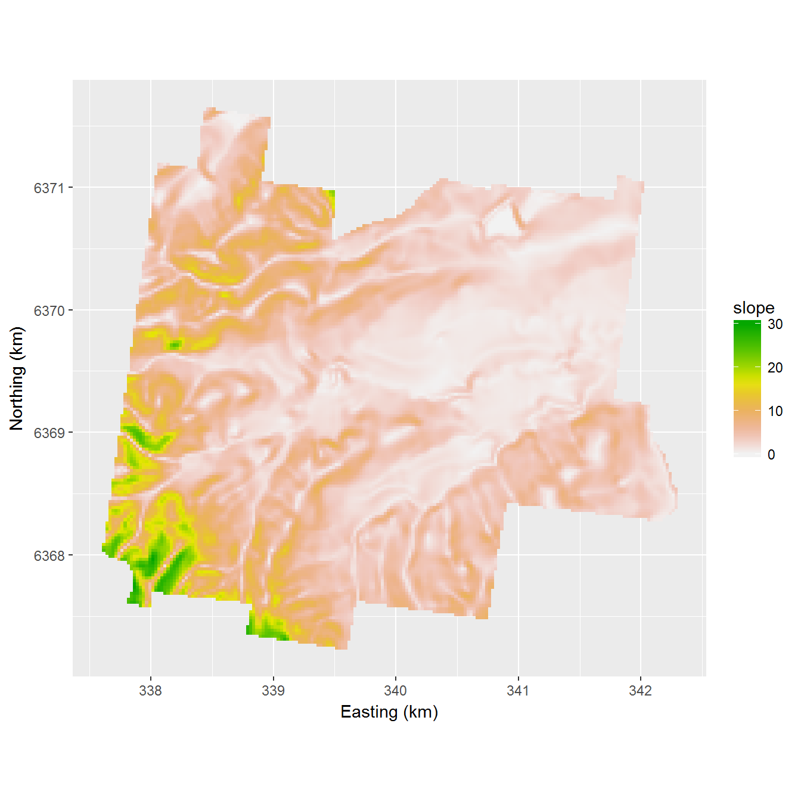

Chapter 14 K-means sampling
Regular grid sampling and spatial coverage sampling are pure spatial sampling designs. Covariates possibly related to the study variable are not accounted for in selecting sampling units. This can be suboptimal when the study variable is related to covariates of which maps are available, think for instance of remote sensing imagery. These maps can then be used in mapping the study variable by, for instance, a multiple linear regression model. This chapter describes a simple, straightforward method for selecting sampling units on the basis of the covariate values of the grid cells.
The sampling methods are illustated with a study area in the Hunter Valley, New South-Wales in Australia. Five quantitative covariates are available: elevation, slope, cosine of aspect, compound topographic index (cti) and normalized difference vegetation index (ndvi). The plot below shows maps of these five covariates. The sharp boundaries on the ndvi map coincide with boundaries of agricultural fields.
 
 

Figure 14.1: Five covariates of study area Hunter Valley used in k-means sampling
14.1 Hard k-means
In hard k-means sampling the covariates are used to cluster the grid cells by the k-means clustering algorithm. Similar to spatial coverage sampling (Chapter 13 the MSSD is minimized, but now the distance is not measured in geographical space but in a \(p\)-dimensional space spanned by the \(p\) covariates (think of it as a multi-dimensional scatter plot with the covariates along the axes). The covariates are scaled so that their standard deviations become 1. This is needed because, contrary to the x- and y-coordinates used as clustering variables in spatial coverage sampling, the dimensions of the covariates used as clustering variables generally differ, and the ranges of the covariates in the population can largely differ. In the clustering of the grid cells the Mean Squared Shortest Scaled Distance (MSSSD)5 is minimized.
In the next chunk a hard k-means sample of size 20 is selected from the Hunter Valley study area. All five quantitative covariates are used as covariates. To select 20 points 20 clusters are constructed using hard k-means. Note that the number of clusters is based on the required sample size, not as usual in cluster analysis on the number of subregions with a high density of points in the multivariate distribution. Grid cells with the shortest scaled Euclidean distance in covariate-space to the centroids of the clusters are selected as the sampling points.
#Set number of sampling locations to be selected
n<-20
#Compute clusters
set.seed(314)
myClusters <- kmeans(scale(grdHunterValley[,c(3,4,5,6,7)]), centers=n, iter.max=1000,nstart=10)
grdHunterValley$cluster <- myClusters$cluster
#Select locations closest to the centers of the clusters
rdist.out <- rdist(x1=myClusters$centers,x2=scale(grdHunterValley[,c(3,4,5,6,7)]))
units <- apply(rdist.out,MARGIN=1,which.min)
myKMSample <- grdHunterValley[units,]Figure 14.2 shows the clustering of the grid cells and their centroids used as the selected hard k-means sample. In Figure 14.3 the selected sample is plotted in a scatter diagram of cti against ndvi.
The MSSSD of the selected sample is computed by:
populationmeans <- apply(grdHunterValley[,c(3,4,5,6,7)],MARGIN=2,FUN=mean)
populationsds <- apply(grdHunterValley[,c(3,4,5,6,7)],MARGIN=2,FUN=sd)
rdist.out <- rdist(x1=scale(grdHunterValley[,c(3,4,5,6,7)]),x2=scale(myKMSample[,c(3,4,5,6,7)],center=populationmeans,scale=populationsds))
dmin <- apply(rdist.out,MARGIN=1,min)
MSSSD <- mean(dmin^2)The MSSSD of the selected sample equals 1.106.
14.2 Fuzzy k-means
In hard k-means each unit (grid cell) can only belong to exactly one cluster. Fuzzy k-means (also referred to as soft k-means) allows units to belong to one or more clusters. A vector containing \(k\) numbers is assigned to every unit, with all numbers in the interval [0,1]. The numbers sum to 1. The numbers indicate the degree to which a unit belongs to each cluster. They are referred to as membership grades. With fuzzy k-means, the centroid of a cluster is the weighted mean of the covariates over all units, using the memberships of that cluster as weights. As before, grid cells with the shortest Euclidean distance in covariate-space to the centroids of these fuzzy clusters are selected as the sampling points.
Fuzzy k-means clustering can be done with function FKM of package fclust and function runFuzme of R package fuzme. R package fuzme can also be used for clustering using Mahalanobis distances. Clustering using Mahalanobis distances can also be achieved with function fanny of R package cluster. My experience is that computing time with these R packages is prohibitive when we have a large number of grid cells. In that case I recommend the software FuzME.
In the next chunk a sample of size 20 is selected, using the memberships obtained with FuzME as input. In fuzzy k-means clustering a fuzziness exponent of 1.3 is used. The covariates are scaled. Correlation between the covariates is not accounted for (whcih can be done by selecting Mahalanobis distance as metric distance in FuzME).
# read memberships computed with FuzMe
m <- read.csv(file="20_class_Diag.txt",sep="")
m <- m[,-c(1,2,3)]
# defuzzify, i.e. compute for each gridcell the cluster with largest membership
grdHunterValley$defuzcluster <- apply(m,MARGIN=1,which.max)
#select locations with largest membership in cluster 1...k
units <- apply(m,MARGIN=2,FUN=which.max)
myFKMSample <- grdHunterValley[units,]Figure 14.2 shows the selected fuzzy k-means sample in geographical space. The clustering is defuzzified, i.e. for each grid cell the cluster with the largest membership is assigned to this grdicell. Figure 14.3 shows the selected fuzzy k-means sample plotted in the same scatter diagram as the k-means sample.


Figure 14.2: Hard k-means and fuzzy k-means sample from study area Hunter Valley, using five covariates in clustering
Figure 14.3: Hard k-means and fuzzy k-means sample plotted in scatter diagram of compound topographic index against normalized difference vegetation index
Exercise (KMSample.R)
- Write an R script to select a k-means sample of size 20, using the five scaled covariates of Hunter Valley in clustering the grid cells
- Compute the Mean Squared Shortest Scaled Distance (MSSSD) of the k-means sample
- Use FuzME to compute a fuzzy clustering for 20 classes,. The input file for FuzME is
grdHunterValley4Practicals4FuzME.csv. Use scaled distances (in FuzME, in box Metric Distance tic Diagonal). Use 1.3 as fuzzy exponent, and set maximum number of iterations to 1000
- Write an R script to select the fuzzy k-means sample for this fuzzy clustering, and compute the MSSSD
- Repeat this for Mahalanobis distances
- Compare the MSSSD’s of the k-means and the two fuzzy k-means samples
The name scaled distance can be confusing. Not the distances are scaled, but the distances are computed in a space spanned by the scaled covariates↩